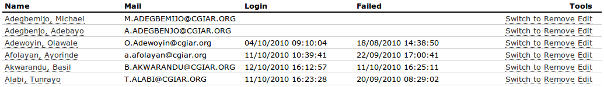

User management section of Administrative pages allows administrators to add, remove and manage users of the application. User's properties describe the user in more detail.
 Administrative listing of application users
Note: The user list may be paginated. Use page navigation above the listing to access other pages. Or use Search.
As your application grows, finding the appropriate user record in the database becomes a difficult job.
When a matching user is not found in local database, the system will connect to Active Directory and execute your search query there. If a matching user is found in Active Directory, user's data will be loaded into a New user form which allows you to import new users.
Enter user's user name or email addres into the provided input field. Press <Enter> key to execute search.
Tick the Ldap? checkbox to force search in Active Directory server. Local database will not be searched.